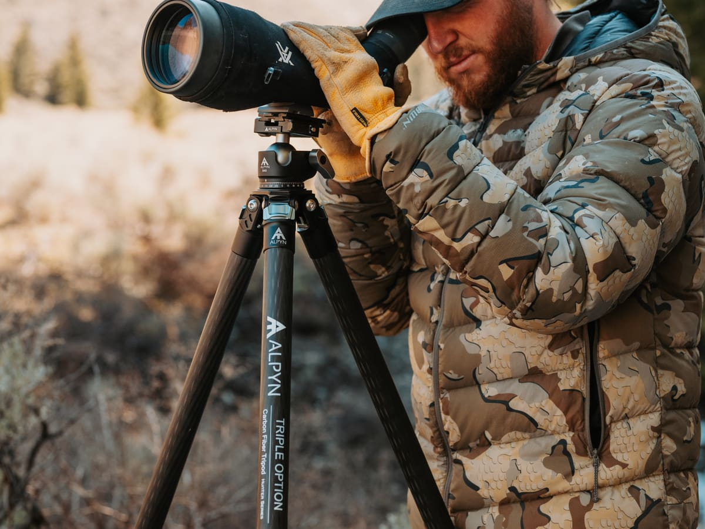
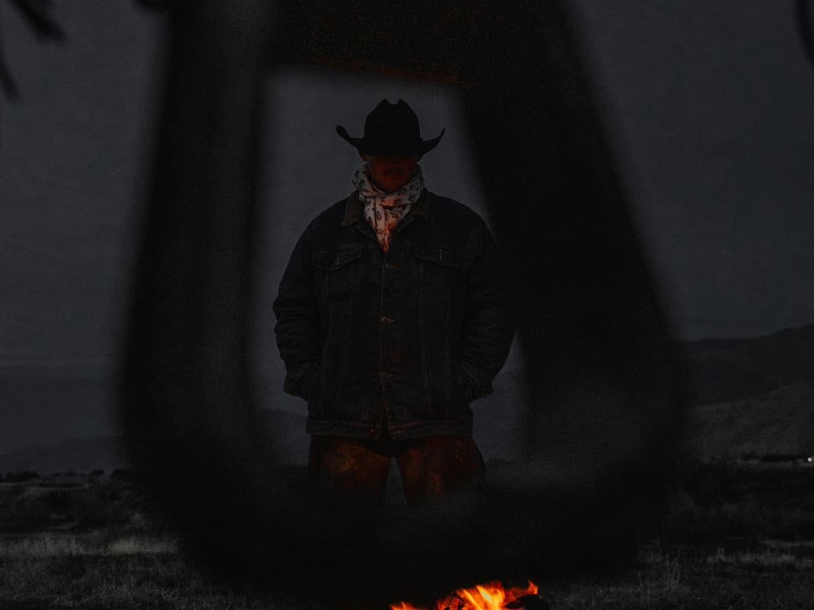
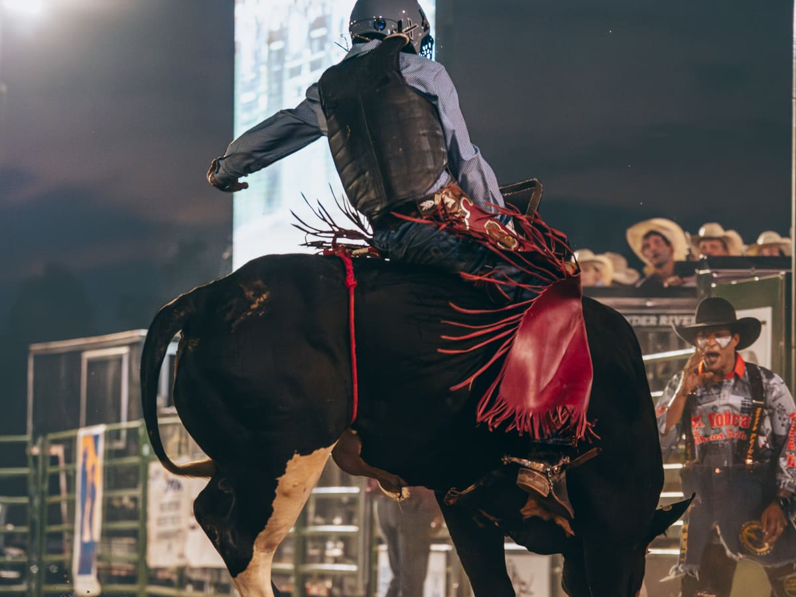
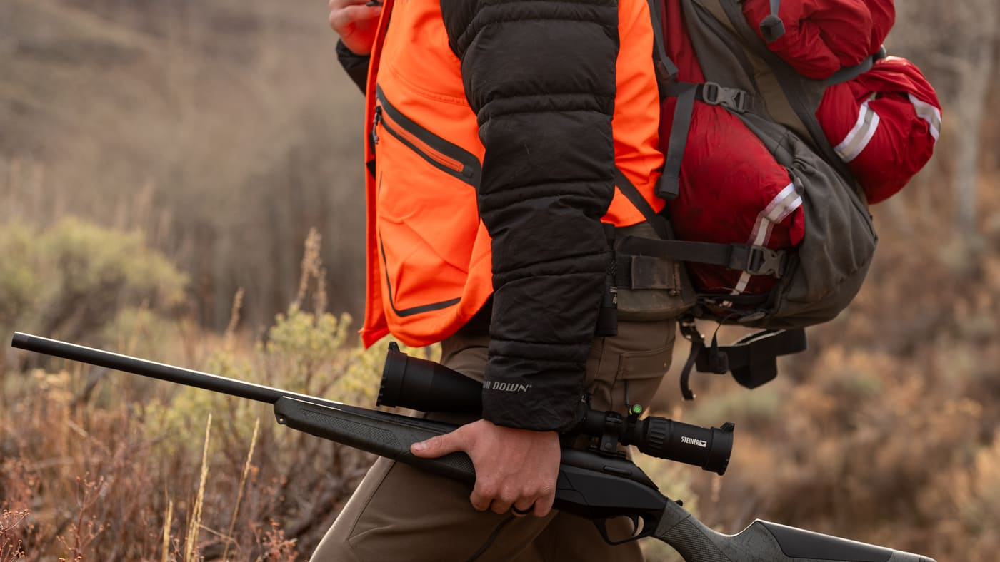
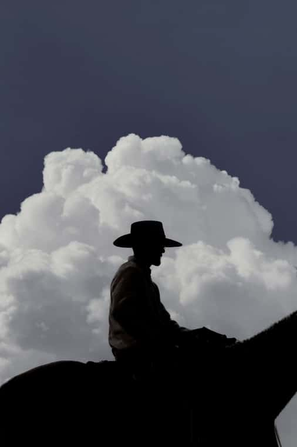

Hunting
Field & Outdoor Storytelling
Work with natural locations, rugged details, gear, movement, and quiet moments that feel believable and useful for outdoor brands.
Western - Hunting - Rodeo
Build a stronger portfolio with guided western portrait sets, fast-moving animals, practical coaching, and a full day of photo opportunities designed for every level of photographer.
The Experience
These workshops blend portrait direction, western styling, hunting and outdoor scenes, rodeo-style movement, and hands-on guidance so you can practice under real conditions without being left to figure it out alone.
Workshop Tracks
Each event is built around practical portfolio use: portraits, action, movement, and strong western atmosphere.

Work with natural locations, rugged details, gear, movement, and quiet moments that feel believable and useful for outdoor brands.

Build confident western portrait work with styled models, practical posing direction, strong backgrounds, and clean framing.

Practice timing, shutter choices, anticipation, and composition around fast movement, animals, riders, and arena energy.
Sign Up
The Outdoorsman workshop is the only session currently open. Other workshop signups are closed for now.

Now Available
Aug. 15th, 2:00 pm - 7:00 pm
A half-day outdoor photography experience featuring big-game hunting, fly fishing, authentic gear, and real backcountry environments.
Capture experienced outdoorsmen in action, receive gear from workshop partners, and learn how to create brand-ready images that can grow your portfolio and your business.
Sign Up Closed
A full workshop day with guided sets, western models, animal movement, practical coaching, and portfolio-building time.
Sign Up Closed
Sign Up Closed
Fast-paced rodeo-inspired shooting with emphasis on timing, movement, animal action, and strong usable frames.
Sign Up ClosedCustomer Reviews
"This workshop was amazing! So much fun and everyone was so kind and helpful. So many opportunities to get incredible shots!"
"Very thoughtfully put together, great content and connections! The whole day was seamless and such a good time!! Can't wait for the next thing they offer!"
Frequently Asked Questions
Both. We have had people come out who just got their camera a couple weeks before the workshop, and well established photographers. Even if you've been shooting for 30+ years, there will be something new for you here.
We take time before each shoot to walk you through the shoot, best settings, and ideal framing to get the best shots.
At its heart, this is a portrait and action workshop, set ups with models and fast moving animals. They just happen to be wearing cowboy hats sometimes, but the skills and, more importantly, the pictures you get from this will help you land clients.
I get it, walking into a workshop with other photographers can feel intimidating at first. But trust me, the nerves disappear fast. From the moment you arrive, you'll be surrounded by friendly people, great energy, and endless photo ops. You'll leave with new friends, incredible shots, and a real taste of Western style.
Absolutely! There will be a lot of action shots and some amazing backdrops perfect for video work.
Ready for the next one?